Pipettor Error (Pump error nonstr-type x)
Error Codes
| Dec | Hex | Arm |
|---|---|---|
| 253.000.00046 | 0xFD.0x00.0x002E | Reagent (Left) |
| 253.000.00047 | 0xFD.0x00.0x002F | Sample (Right) |
| 253.014.00046 | 0xFD.0x0E.0x002E | Reagent (Left) |
| 253.015.00047 | 0xFD.0x0F.0x002F | Sample (Right) |
Complaint Description
Pipettor error (Pump error nonstr-type x)
Nonstr-type [non-str; non-string; nonstr; nonstring; non str; non string] error codes are standard APP or APE module level message codes.
These are reported in decimal values, refer to appropriate MDD or CDD for detailed messages. (APP: MDD FW APP 6319, APE or BLDC: CDD FW 6319 APE ZSPip EC.)
Reagent pipettor (Left arm), Pump error (nonstr-type)
Sample pipettor (Right arm), Pump error (nonstr-type)
Technical Support
Auto Dispatch all nonstr-type x errors as a Severity 2. Troubleshoot error as normal. Inform customers FSE Field Service Engineer. will contact them to set up service. Customer can continue to process samples if instrument restart is successful.
Field Service Engineer. will contact them to set up service. Customer can continue to process samples if instrument restart is successful.
Troubleshooting:
- Reset instrument.
- Perform MW cleaning to test sample pipettor.
- For Sample pipettor error (Pump error nonstr-type 3, associated with PFS or CLT): no service is needed. See below .
- For all other Sample pipettor error (Pump error nonstr-type x): always contact FSE as likely pipettor will need service. However, it is still possible the instrument will run without recurrences for a while so if FSE is not available, advise customer to run untested samples.
- Specific error codes related to software anomalies
- Nonstr-type 3: should be fixed in 7.2.3 patch, look for overpressure or CLT flag prior to error.
- Nonstr-type 11: downstream anomaly due to 080.000.00066 MTU barcode scanner is not responding. While not a pipettor error, underlying error should be investigated: - MTU lot #, -MTU scanner/LD teach, -MTU scanner
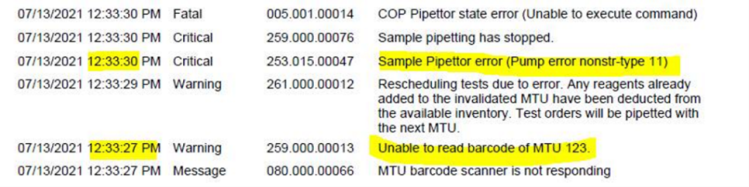
- Nonstr-type 53: common error in prior to sw version 5.3. Fixed with v5.3 instrument setup.
-
Aside from special cases above, this usually requires dispatch.
- 1-9: z-flex cable replacement will usually resolve issue
- 10+: usually requires pipettor replacement.
- FSEs should follow isolation procedures in Field Service section.
- Check reagent bottles are not completely full (up to the bottle neck).
- Reset instrument, will perform simple self test on initialization.
- Prime does not test either pipettor.
- MW cleaning only checks sample pipettor and does NOT test the reagent pipettor.
- Customer can keep running but there is a risk the issue will recur.
Always notify FSE.
Field Service
Flex Cables Connections, PCBs
- Inspect for any loose connections, worn out or damaged flex cables, burnt components on any of the Pipettor PCBs.
- Re-connect loose connections, replace any bad flex cables or PCBs.
Wet Pipettor Head
- Make sure Reagent bottle is not completely full (up to the bottle neck).
- Remove DiTi and inspect for any fluid.
- Use different Reagent Kit.
- If able to see fluid inside the DiTi, most likely fluid got inside pipettor head, and pipettor needs replacement.
Bad Pump, Piston or Lead Screw (Stiff Plunger)
Initialize Pipettor thirty times to exercise pump.
or/and Perform Pressure Integrity Test ten times to exercise pump.
or/and Using Service Software, cycle pipettor using BLLD one hundred times to exercise pump.
-
If able to replicate error, replace pipettor.
or
-
If able to hear a squeak, or see stuttering from plunger, or pipettor fails during the testing, replace pipettor. Otherwise, return instrument to customer.
Specific Examples
Non-str type 10 errors
NonStr-type 10 is “Motor overload detected: Motor defect or blocked or not connected”. Replace the Pipettor.
Panther 00970-sample pipette error OUR LADY OF THE LAKE REGIONAL MEDICAL CENTER SR 3477300: Using pipettor graphing to root cause nonstr-type 10
Background:
Customer encountered sample pipette error type 10, upon shutdown and restart the error recurred. FSE arrived on site and processed several samples unable to replicate issue directly as no error messages during sample pipetting. By graphing the pressure curves for the processed samples showed the underlying problem was still there.
What event caused Fatal error?
Using the health report to work backwards, the fatal error is caused by sample pipettor critical error. More specifically, pump error nonstr-type10. Health report also captured second occurrence after restart, which occurred on 09/02/2014 07:35:12.677 253.015.00047.
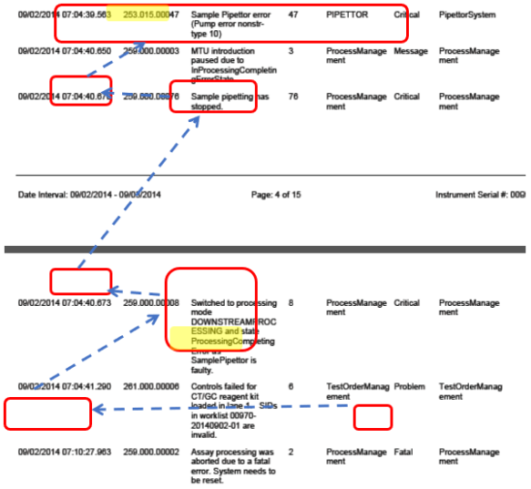
What is a nonstr-10 error?
From the troubleshooting guide, white paper section for pipettors:
Nonstr-type 10 = Motor overload detected: motor defective, blocked, or not connected.
Characterizing problem using pressure graphs:
-
Logs confirm error occurs during dispensing : 9/2/2014 12:35:13 PM (02 07:35:13) [E] (Critical , High ) [PipettorSystem] Sample Pipettor error (Pump error nonstr-type 10) ID=6238 PipettorDispense 'Add Sample' (Sample) PlannedStart=12:32:20.857 worst event at 12:35:12.157, start=12:35:05.657 end=12:35:12.257 (MTU=1 BarcodeID=1338293471, samples=8014/1424406218 CompletionTime=2014-09-02T15:54:24, , cmd params: Sample (SP) Index=27 finalZ=4611, vol=1299, track=70, fluid=33031 ) [0xFD.0x0F.0x002F] [253.015.00047]
-
Sometimes using aspiration or shearing curves is better for analysis because at slower pipetting velocity, less momentum is available to overcome problems that cause motor overload issues. In addition, the pipetting parameters for aspiration and shearing allow for maximum sampling rate.
-
Graph control tubes instead of actual samples, as the fluid properties are relatively constant as opposed to actual sample which can vary widely. a. Graphing from send logs: (More detailed directions can be found in Panther Troubleshooting Guide) i. Rename *.gpz as *.zip and unpackage.
I. Open the send logs file and choose the “\Curves” folder.
II. Folders are arranged by timestamp of when instrument was last restarted and primed. e.g. YYYY_MM_DD_HH-mm-ss
1. AspirationPressureCurve_2014_09_02_07-17-51.curve
2. ShearingPressure_2014_09_02_07-17-51.curve
Pressure curves from send logs uploaded by customer:
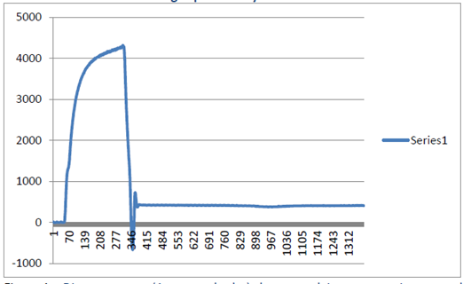
Figure 1 – Dispense curve (1st control tube) shows resolving pressure issues can be difficult. (x-axis: time, y-axis: pressure)
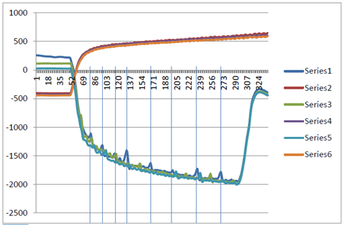
Figure 2 - Shearing pressure (first control tube). Shearing is 3 cycles of aspiration/dispense used to help break mucoidal strands. Blue vertical show pressure spikes are periodic.
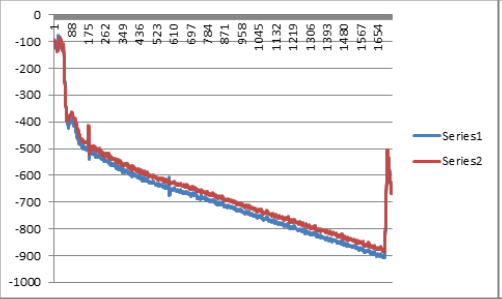
Figure 3 - Aspiration Curve: The Controls show an interference with the syringe. They are not mucoidal and a known value of fluid. The curves show a problem even on the Controls. It could be the syringe or the motor driving the syringe on the specimen pipettor.
Confirming the issue:
FSE arrived on site and performed a small run with no errors. Checking the pressure curves showed the underlying problem was still present (Figure 4). FSE replaced pipettor and graphed pressure curves from resulting PQ showing problem resolved as pressure spikes are now gone (Figure 5.) improvement.
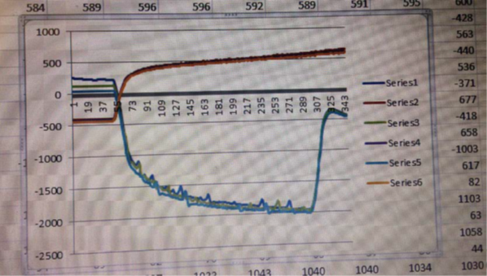
Figure 4 – Shearing graph from error free run prior to pipettor replacement shows underlying issue still present.
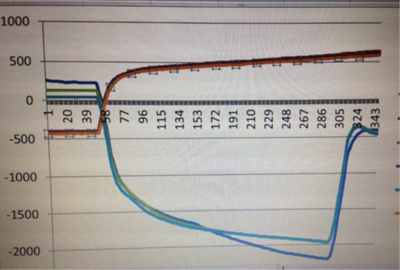
Figure 5 – Shearing graph after replacement of sample pipettor shows smooth curves.
Non-str type 33 errors
Take a look at the aspiration/ dispense curves. This example had a sticky plunger:
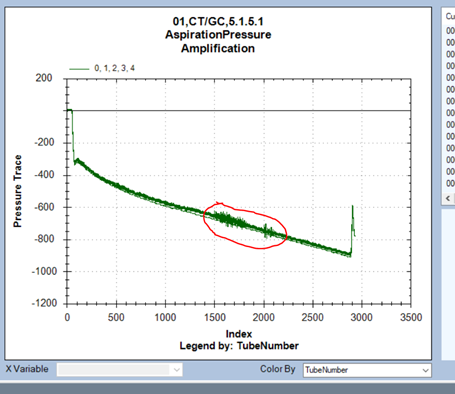
Amplification Aspiration LLD=867 for SIDs 306423/132216613803 [CT/GC] , 306422/132291023803 [CT/GC] , 306426/132443231203 [CT/GC] , 306419/132216599603 [CT/GC] , 306428/132291020303 [CT/GC] . [259.000.00058]
Reagent Pipettor error (Pump error nonstr-type 33) ID=13681 EjectDiTi 'AmpReagentPipettingStep' (Amplification) PlannedStart=12:53:54.191: , start=12:54:20.691 end=12:54:23.591 (MTU=22 BarcodeID=2185465443, samples=306423/132216613803/Normal, 306422/132291023803/Normal, 306426/132443231203/Normal, 306419/132216599603/Normal, 306428/132291020303/Normal, , cmd params: Amplification (RP) [coo=2,fZ=0] ). Event [0xFD.0x0E.0x002E] at 12:54:23.491 bytes: FD 7E 03 0E 2E 01 21 00 [253.014.00046]
Non-str type 36 errors
Non-String Type 36 = Valve Test Failure -> New Pipettor.
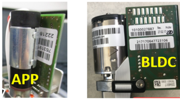
Non-str type 3 errors (associated with CLT or PFS)
If there is a CLT error followed by a Pipettor NonStr-3 error, this does not require an immediate dispatch, but can be fixed with a FW upgrade.
This was a big problem in the summer/ fall of 2021. And was fixed with new FW. See TB-01772.
The problem is caused by improper error handling of an overpressure event - It happens on both types of pipettors and previous versions of software as well (5.3, 6.2, etc.). But, was most prevalent with APP pipettors and SW 7.2.1.
Current mitigation is to have the FSE go in and upgrade the FW. This is fixed in the latest version of 7.2.1 Software, and above (Pipettor FW version 01.0310APP or 01.0109.1 BLDC, or Higher).
Pretty sure all nonstr-type and rdv errors will generate a PFS or PFR
Aspiration = CLT
<>(Warning) 08:46:55.414: Sample Pipettor clot detected (Ev=C3) [00.0F.C3] bytes: 00 00 02 0F C3 01 00
<>(Critical) 08:46:56.314: Sample Pipettor error (Pump error nonstr-type 3) (Ev=2F) [FD.0F.2F] bytes: FD DF 03 0F 2F 02 03 00
12/29/2020 08:46:56 (29 17:46:56) [E] (Critical , High ) [PipettorSystem] Sample Pipettor error (Pump error nonstr-type 3) ID=27358 PipettorAspirate 'Add Sample' (Sample) PlannedStart=08:44:18.514 worst event at 08:46:56.314, start=08:46:36.014 end=08:46:56.814 (MTU=76 BarcodeID=2092241080, samples=[0] , [1] , [2] , [3] 6034/12290015601, [4] , , cmd params: Sample (SP) Index=237 finalZ=158, vol=381, track=64, fluid=32779 ) [0xFD.0x0F.0x002F] [253.015.00047]
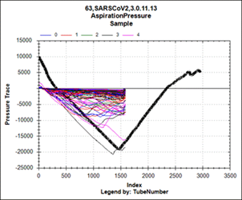
Dispense: usually don’t always see a pressure trace, but asp curve will look bad (like the graph above shows).
Overpressure (during dispense, if there is a pressure trace)
2021-03-03 11:20:00,186|[ProcessEvent]|EventLogger|EventLogEntry|Info|Error|03/03/2021 17:20:00 (03 11:20:00) [E] (Critical , High ) [PipettorSystem] Sample Pipettor error (Pump error nonstr-type 3) ID=46504 PipettorDispense 'Add Sample' (Sample) PlannedStart=17:19:47.855: , start=17:19:49.255 end=17:19:59.855 (MTU=125 BarcodeID=2079464482, samples=6282/A21458409001/Normal, , cmd params: Sample (SP) [coo=28,fZ=4607] , vol=396, track=70, fluid=33028 ). Event [0xFD.0x0F.0x002F] at 17:19:59.755 bytes: FD DF 03 0F 2F 02 03 00 [253.015.00047]
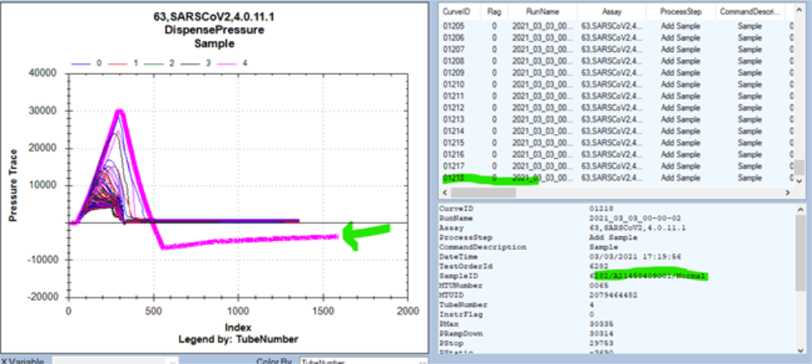
This is not a fully fatal error- MTUs that have passed through sample dispense with no errors will finish.
Another Example, 03765 Case 00818840 2021.03.03 Sample Pipettor non str type 3 error
It looks to me like a sample quality issue, the PFS samples are highlighted from 3/2 on left and and 3/3 on right:
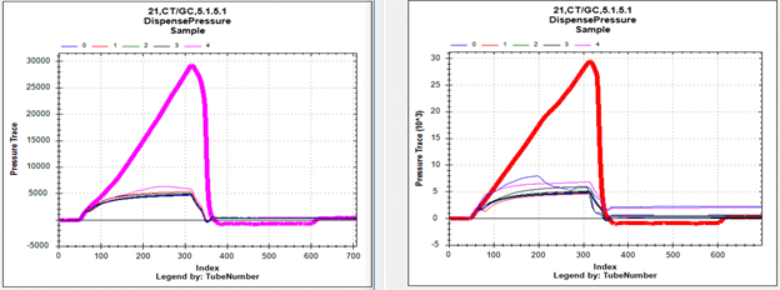
I would not recommend a replacement at this point. Other process steps appear normal for that arm.
There are three types of nonstr-type 3 errors we’ve seen.
-
Older FW version pre system sw 5.3 – overpressure after aspiration triggered when pulling traveling airgap.
-
Flex cable issue.
-
FW/SW related error handling of an overpressure event (aspirate/dispense). This error can be exacerbated by tips.
In this case - sample pipettor (pump move canceled due to overpressure detection)
If this occurs to a customer, they should allow assay processing to complete. Then they can and restart the instrument and continue to run, but a FSE should be dispatched to upgrade the FW.
There does exist a vortexing protocol that can help mitigate this issue by breaking up the clots and reducing the maximum pressure during aspiration. It is recommended for the SARS-CoV-2 samples, but obviously we cannot force this to be implemented at every site.
 button at the top of the page to send feedback, comments, or change requests.
button at the top of the page to send feedback, comments, or change requests.